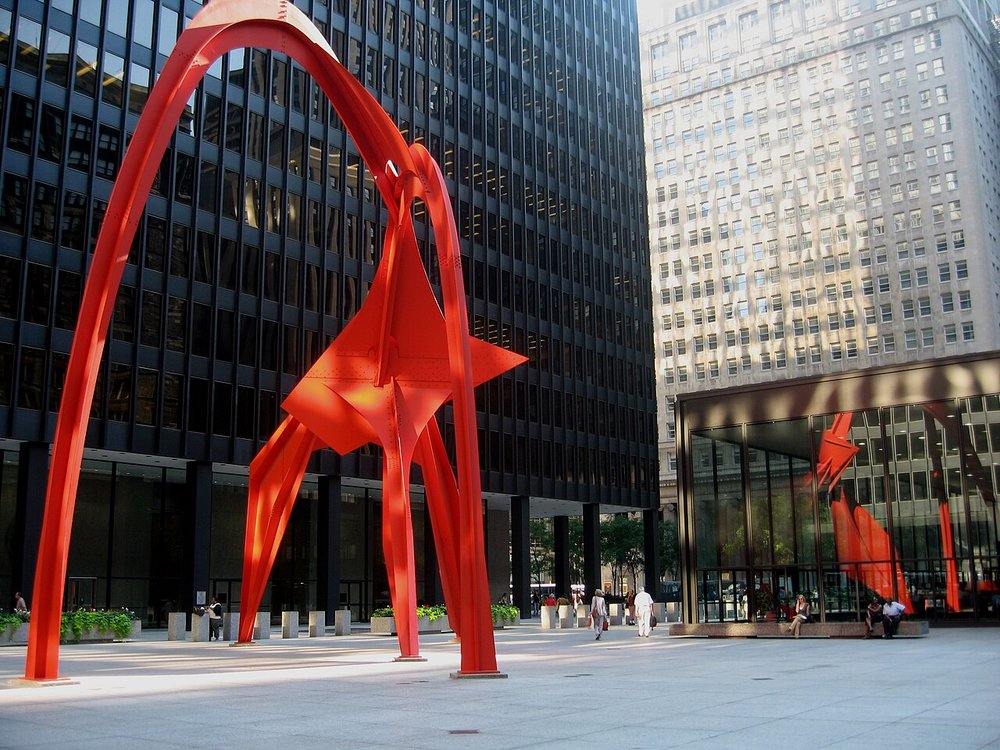

Flamingo
Alexander Calder · 1974 · Painted steel · 53 ft high
In copyright. Look and learn: shown for study, not for download. · Photo: John Picken, CC BY 2.0
This was the first work of art commissioned by the General Services Administration under the federal Percent for Art program. The steel stabile is 53 feet tall and weighs 50 tons. Calder unveiled the model at the Art Institute of Chicago on April 23, 1973, and the sculpture was presented to the public on October 25, 1974, a day proclaimed Alexander Calder Day and marked with a circus parade. Calder's signature on it indicates it was constructed in 1973.